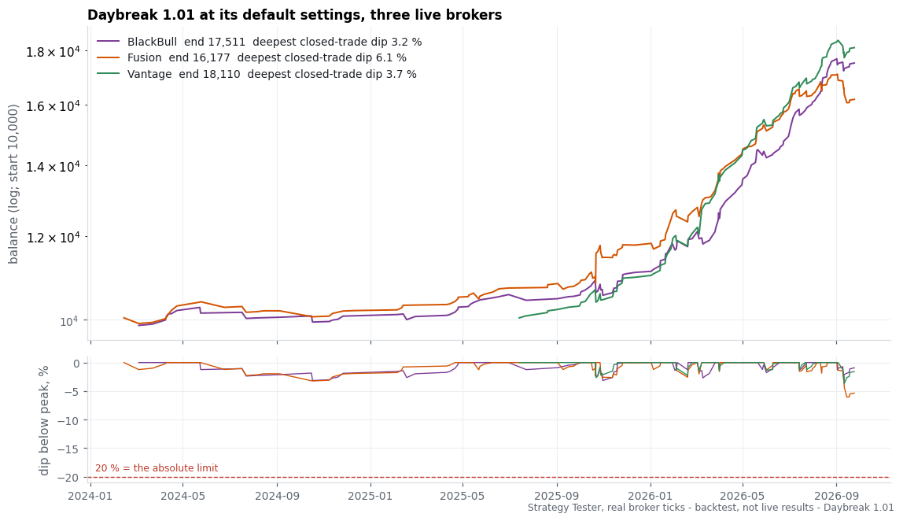
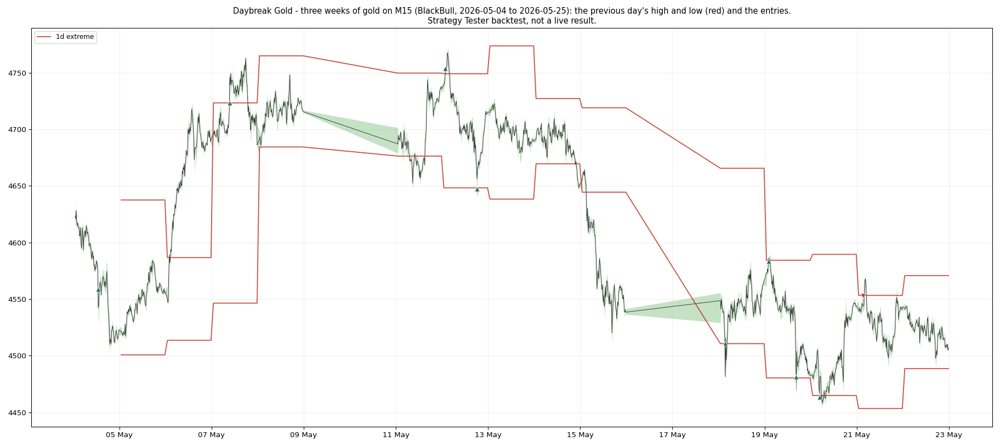

Daybreak — Research Note
What the machine does, what was left out on the way to the shipped version, and what the tests behind each figure showed.
Version 1.01 · October 2026
All figures in this note are Strategy Tester runs on real broker ticks at 100% history quality. They are backtests, not a record of live trading. Every number names the broker feed and the window it came from; a number that cannot be traced that way does not appear here.
0. The result in one table
Version 1.01, compiled defaults. Backtest, MetaTrader 5 Strategy Tester, real ticks at 100 % history quality, 10,000 starting deposit, 2 January 2024 to 26 September 2026, three live broker feeds (Vantage's real-tick history starts in July 2025, so its row covers July 2025 on):
| feed | net | % of deposit | profit factor | trades | relative equity drawdown |
|---|---|---|---|---|---|
| Fusion - the published figure, the weaker of the two feeds that cover the whole window | 6,176.63 | +61.8 % | 2.37 | 159 | 6.43 % |
| BlackBull | 7,511.23 | +75.1 % | 3.09 | 159 | 3.50 % |
| Vantage (from July 2025) | 8,109.57 | +81.1 % | 4.12 | 122 | 3.97 % |

Pepperstone, used in earlier measurements, is left out of the current figures: its real-tick archive on our test terminal has gaps in 2026, and a figure built on filled-in ticks is not published.
Earlier measurement
Daybreak runs out of the box on its Medium setting (1.5% of balance risked per trade, against the trade's own $5 level-anchored stop). Three live broker feeds, $10,000 starting balance, compiled defaults:
Backtest, MetaTrader 5 Strategy Tester, real ticks, BlackBull / Fusion / Pepperstone, 2025-01-02 to 2026-09-25, fixed 250 ms execution delay, compounding, Medium risk (1.5% of balance per stop).
| Feed | Growth | Profit factor | Max equity drawdown |
|---|---|---|---|
| BlackBull | +52.9% | 2.49 | 4.23% |
| Fusion | +70.2% | 2.77 | 6.21% |
| Pepperstone | +285.3% | 5.96 | 6.76% |
Backtest, MetaTrader 5 Strategy Tester, real ticks, BlackBull, 2025-01-02 to 2026-09-25, Medium risk.
The headline figure above is BlackBull's — the weakest of the three live brokers in this window, not the strongest. Fusion and Pepperstone are shown alongside it rather than in its place:
Backtest, MetaTrader 5 Strategy Tester, real ticks, Fusion / Pepperstone, 2025-01-02 to 2026-09-25, Medium risk.
How the machine got to that table, what it leaves out on a quiet day, what a losing run costs, and which market this result belongs to, is the rest of this note.
1. How it was tested
- Real ticks only. Every figure in this note is a Strategy Tester run on a broker's own tick archive at 100% history quality, not a one-minute-bar approximation.
- A fixed execution delay. Every run charges a 250 ms delay between the signal and the fill, so the figures already carry a cost for order latency rather than assuming an instant fill.
- Three feeds are one gold market, not three samples. BlackBull, Fusion and Pepperstone price the same market through three different spreads and fill behaviours. Agreement across them shows the mechanism survives the broker; it does not multiply the evidence by three (section 4 shows how much the three still differ).
- The shipped defaults are the tested configuration. Daybreak's compiled defaults (Settings = Recommended, Risk = Medium) reproduce the exact setup this note's figures were measured on. Nothing needs to be changed to get the tested behaviour.
2. The mechanism: two prices a day
Every trading day, Daybreak marks two prices: the previous day's high and the previous day's low. A break through either level — after the day's first M15 bar has closed, so a break that already happened before the EA could see it is not a signal — opens one position, never more than one at a time. No grid, no martingale, no averaging into a losing position.

The stop loss and the take profit are measured from the level itself, not from the price the order actually filled at, so the risk on the trade is the same distance whatever the slippage was at the moment of the break: a $5 stop, a $50 target. Once the trade is far enough ahead, a trailing stop takes over, following the best price on every tick and giving back only a fixed $0.50 from it. Held positions typically last seconds to minutes, not hours.
Skipping quiet days. A day whose prior 24 hours moved too little is held entirely — no new entries — unless the break reaches into price the market has not traded in five days, in which case it is let through on its own. A level the price has already jumped more than half a stop past by the time it is seen is dropped for that day rather than chased.
Skipping the calendar. New entries are held on the day of a US employment report, a Federal Reserve rate decision, and the thinly-traded days around the year-end close. Existing positions are not affected — only new entries are.
3. Risk levels: Low, Medium, High
One input controls position size: a percent of balance risked per trade against the trade's own $5 stop. Higher risk grows the account faster in these backtests and draws down harder; there is no level that avoids that trade-off.
Backtest, MetaTrader 5 Strategy Tester, real ticks, BlackBull / Fusion / Pepperstone, 2025-01-02 to 2026-09-25, fixed 250 ms execution delay, compounding.
| Risk level | Risk per stop | Feed | Growth | Profit factor | Max equity drawdown |
|---|---|---|---|---|---|
| Low | 0.75% | BlackBull | +23.4% | 2.50 | 2.11% |
| Low | 0.75% | Fusion | +30.5% | 2.84 | 3.08% |
| Low | 0.75% | Pepperstone | +95.5% | 6.34 | 3.38% |
| High | 3.0% | BlackBull | +132.8% | 2.47 | 8.41% |
| High | 3.0% | Fusion | +185.3% | 2.65 | 12.23% |
| High | 3.0% | Pepperstone | +560.7% | 5.38 | 9.69% |
(Medium sits between the two — see the table in section 0.)
High risk on a leveraged gold account is size-limited by margin, not just by the risk setting. A 1:20 gold-margin account (the standard ESMA retail limit) runs out of free margin for the full risk-sized lot well before 3% of balance is actually at stake; a margin-fit sizer shrinks the lot to fit rather than let the broker refuse the order. The High figures above already include that shrink — without it, this window would have produced long stretches with no trade at all rather than a larger one.
4. Execution: why results differ by broker
The entries are identical across the three brokers — same levels, same day, same side. What differs is how far each broker's tick stream carries the trailing stop before it is taken out, which is why the same mechanism produces three different growth figures above.
Backtest, MetaTrader 5 Strategy Tester, real ticks, BlackBull / Fusion / Pepperstone, 2025-01-02 to 2026-09-25.
In these tests the average win per 0.01 lot ranged from about $1.7 to $4.4 broker to broker, purely from how each broker's own tick stream lets the trailing stop run: on one feed the same $0.50 trail survived about twenty seconds on a typical winner, on the others two to three seconds, from the same entries. Which feed does what is a property of that feed, measured, not predicted.
Random execution delay. The 250 ms figure above is fixed; a further test replaced it with a randomly varying delay, five runs on each of the three brokers. Every run stayed profitable, profit factor ranging from 1.52 to 4.57, and the middle run on each broker kept 60% to 76% of that broker's zero-delay result. A VPS close to the broker's server is recommended, since delay is part of what these figures measure, not something the strategy is indifferent to.
5. Regime honesty: a system for a moving market
Every figure in this note comes from gold in 2025 and 2026 — a period of large, frequent daily moves. The same rules, unchanged, run on gold from 2018 to 2024 were flat to slightly negative. Daybreak is built for a gold market that moves; it is not offered as an all-weather system, and a return to a quieter gold market would be expected to bring these figures back down with it.
6. Losing runs: what the tests show
Losses come in runs, not evenly spread. In these backtests, five to seven consecutive stop-outs happened about once a year — October 2025 and September 2026 in the window above — each one costing roughly one risk unit. Across a run like that, the cost was roughly 3% of balance at Low, 7-11% at Medium, and 12-20% at High, depending on the broker's tick stream. No filter that was tested could tell one of those days from a normal one in advance; the risk level is what actually controls how much a run like that costs. Choose the level whose run size is one you would sit through.
7. What was tried and left out
So the reader knows what is not in the box: a stop capped from the fill price instead of the level, a fixed take-profit distance in place of the trailing exit, a stepped (rather than continuous) trailing stop, session and calendar filters beyond the ones shipped, a machine-learned entry filter, a market-regime filter, and a rule that stands the strategy down after a losing streak were all tested. Each one either cost return on the live broker feeds or failed once it was checked on data it had not been built on. None of them is in the shipped product.
8. Where the engine came from
Daybreak's break-and-trail engine began as a measured decode of a commercial gold breakout EA. That decode contained two separate trading engines; only the prior-day-level engine described in this note was kept. The second engine was left out because, once execution delay was modelled honestly, its edge disappeared in testing. The vendor is not named here or anywhere in this product's materials — what is published is the mechanism and the tests that decided it, in our own words.
9. Limits
Backtest, MetaTrader 5 Strategy Tester, real ticks, BlackBull / Fusion / Pepperstone, 2025-01-02 to 2026-09-25.
- These are backtests on tick archives, not a record of live trading. A live account adds real spread, slippage and a broker's own fill behaviour on top of what the archive can show; section 4's broker-to-broker spread is the size of that kind of difference on three feeds, not a guarantee of it.
- The result belongs to a moving gold market (section 5). A quiet gold market means few trades and a flatter, possibly negative, result — that is the design, not a malfunction.
- Growth figures compound a single $10,000 start across one 2025-01-02 to 2026-09-25 window. A different start date inside the same window moves the growth number; the drawdown figures move less, which is why they are quoted alongside every growth figure in this note.
- Past results, backtested or live, do not predict future results. Test on a demo account with your own broker before trading real funds.